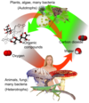

heterotrophic

Definition: A heterotroph (; from Ancient Greek ἕτερος (héteros) 'other', and τροφή (trophḗ) 'nutrition') is an organism that cannot produce its own food, instead taking nutrition from other sources of organic carbon, mainly plant or animal matter. In the food chain, heterotrophs are primary, secondary and tertiary consumers, but not producers. Living organisms that are heterotrophic include all animals and fungi, some bacteria and protists, and many parasitic plants. The term heterotroph arose in microbiology in 1946 as part of a classification of microorganisms based on their type of nutrition. The term is now used in many fields, such as ecology in describing the food chain.
Source: Wikipedia
Wikipedia Page (Something wrong with this association? Let us know.)
Wikidata Page (Something wrong with this association? Let us know.)